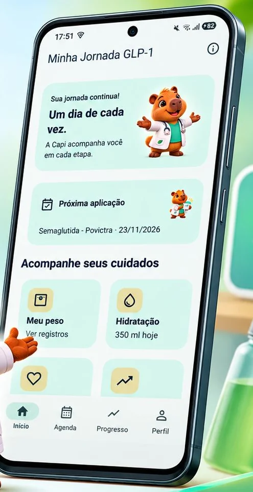

Agenda de aplicações
Cadastre seu tratamento com medicamento, dose e frequência e veja quando é a próxima aplicação.
Registre aplicações e doses, receba lembretes, acompanhe peso, hidratação e sintomas e veja sua evolução em gráficos. Tudo em um só lugar, com a Capi do seu lado.

Menos anotações soltas e lembranças de cabeça. Mais clareza sobre a sua rotina e sobre como seu corpo está respondendo.
Cadastre seu tratamento com medicamento, dose e frequência e veja quando é a próxima aplicação.
Configure avisos para não esquecer nenhuma dose e manter a regularidade combinada com seu médico.
Anote seu peso e acompanhe o histórico completo, sem planilhas nem papéis perdidos.
Registre a água que você bebe ao longo do dia e crie um hábito importante durante o tratamento.
Anote como você se sente após cada aplicação. Informação valiosa para conversar na próxima consulta.
Visualize seus registros em gráficos e compare semanas e meses para enxergar sua evolução.
Gere relatórios em PDF para levar à consulta, faça backup e restauração dos seus dados ou remova os anúncios.
Tratamentos longos ficam mais fáceis quando a rotina é simples. A Capi, nossa capivara de jaleco, aparece no app para lembrar, comemorar cada registro e deixar o acompanhamento mais leve.
Escolha entre tema claro, escuro ou automático e deixe o app com a sua cara.
“Sua jornada continua!”
Sem cadastro complicado. Baixe, configure seu tratamento e pronto.
Informe o medicamento, a dose e a frequência prescritos pelo seu médico e ative os lembretes.
Marque cada aplicação e anote peso, água e sintomas em poucos toques.
Veja gráficos e histórico e leve informações organizadas para a próxima consulta.
Entenda o básico sobre a classe de medicamentos que o app ajuda você a acompanhar.
O GLP-1 (peptídeo semelhante ao glucagon tipo 1) é um hormônio produzido naturalmente pelo intestino. Os medicamentos chamados agonistas do receptor de GLP-1 imitam a ação desse hormônio e são indicados para o tratamento do diabetes tipo 2 e, em alguns casos, da obesidade.
Fazem parte dessa classe substâncias como semaglutida, liraglutida, dulaglutida, exenatida, tirzepatida e lixisenatida. Muitas delas são aplicadas com canetas injetáveis, por isso ficaram conhecidas popularmente como “canetas emagrecedoras”.
Desde junho de 2025, a Anvisa exige que a receita desses medicamentos seja emitida em duas vias e que uma delas fique retida na farmácia. A receita vale por até 90 dias. A medida busca reduzir o uso sem acompanhamento profissional e os eventos adversos associados.
Como o tratamento costuma ser contínuo, com ajustes de dose ao longo do tempo, manter registros organizados de aplicações, peso e sintomas ajuda você e o profissional de saúde a acompanhar a evolução com mais segurança.
Dados de saúde são sensíveis, e o app foi pensado para isso. Veja todos os detalhes na política de privacidade.
Os registros ficam armazenados no próprio celular e não são sincronizados com os servidores da Webmatte.
Registre aplicações e acompanhe seu histórico mesmo sem internet.
Seus registros de saúde não são vendidos. Você pode apagá-los pelo próprio app e decide com quem compartilhar relatórios e backups.
Sim. O download é gratuito na Google Play e o app exibe anúncios. Relatórios em PDF, backup e restauração e a remoção de anúncios são recursos opcionais pagos, conforme as condições apresentadas no próprio aplicativo.
Não. O Minha Jornada GLP-1 é uma ferramenta de organização pessoal. Ele não faz diagnóstico, não prescreve medicamentos e não recomenda doses. Siga sempre as orientações do profissional de saúde que acompanha o seu tratamento.
Você cadastra o tratamento prescrito pelo seu médico, com o nome do medicamento, a dose e a frequência. O app foi pensado para quem usa medicamentos da classe GLP-1, como semaglutida, liraglutida e tirzepatida.
Sim. Os registros ficam armazenados no próprio aparelho e continuam disponíveis offline para as funções locais do app.
Os registros ficam salvos no seu celular e não são enviados automaticamente aos servidores da Webmatte, nem vendidos. Você pode excluir os registros pelo próprio app ou pelas configurações do sistema. Relatórios em PDF e backups que você exportar ficam onde você escolher e devem ser apagados separadamente. Saiba mais na política de privacidade.
Sim. Você cadastra o tratamento, consulta a agenda das próximas aplicações e configura lembretes para não esquecer nenhuma dose.
Sim. Você pode mostrar os gráficos e o histórico direto no app e, com o recurso opcional de relatórios em PDF, gerar um documento com seus registros para compartilhar com o profissional de saúde.
No momento o Minha Jornada GLP-1 está disponível para Android, na Google Play.
Baixe grátis o Minha Jornada GLP-1 e tenha aplicações, peso, hidratação e sintomas sempre organizados.
Disponível noGoogle PlayAviso importante: o Minha Jornada GLP-1 é uma ferramenta de organização pessoal. Não faz diagnóstico, não prescreve medicamentos, não recomenda doses e não substitui a avaliação e o acompanhamento de profissionais de saúde. Siga sempre as orientações do seu médico.